One world.
One continuous race.
Purl and Loop run from the opening rug, around connected bends, through the loom city and across the flower-gate finish. The next area comes into view as the camera follows them.
Construction handoff, not a finished game. The images below are visual targets. The included 3D course is a simplified connected layout. Production scenery, natural character animation, game integration and Android testing remain.
The opening, the connected turn and the finish
Select an image to inspect it at full resolution. These are concept renders, not screenshots proving that the game runs.

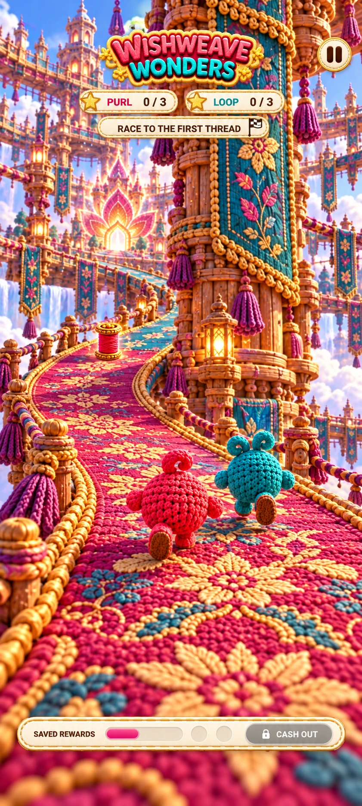
Run onto the supported rug
Feet meet the road surface. Both racers share the world. The bend is already visible ahead.

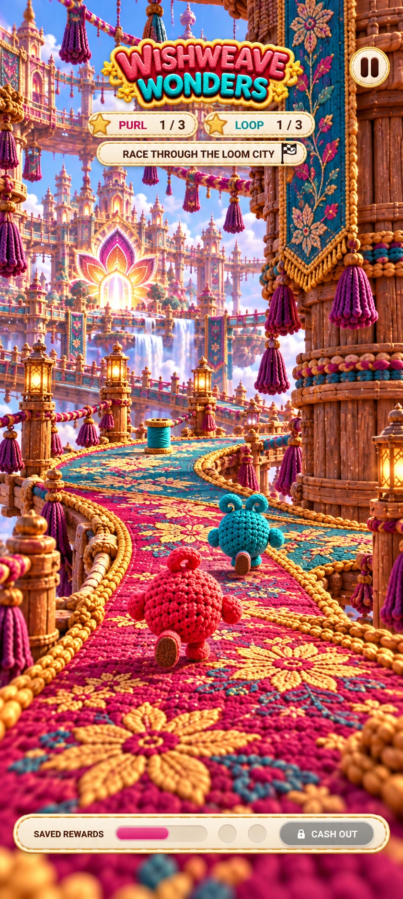
The camera travels with Purl
Purl rounds the tower into the next part of Level 1. There is no page flip, reset or unsupported crossing.

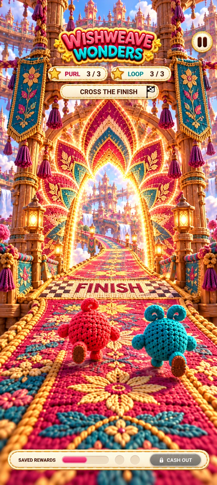
Cross the line to finish
Three different threads are required. Each racer must physically cross the marked gate threshold.
Simple controls, natural movement
| Normally | Purl runs automatically at a moderately brisk pace. |
| Swipe left / right | Steer within the road; choose a branch at a junction. |
| Swipe up | Jump. One gesture, one action. |
| Double-tap | Stop or resume Purl. Loop keeps racing. |
| Pause button | Pause both racers and the world. |
What makes the race feel right
- Alternating foot plants and push-offs match actual distance traveled.
- The body leans into turns; the camera follows smoothly behind.
- Purl stops in an idle pose, without running in place.
- Loop has independent movement, decisions and reactions.
- If Purl slows down, Loop can pass. Results are not forced.
- The next area is visible before entry. The world never switches pages.
A connected route from start to finish

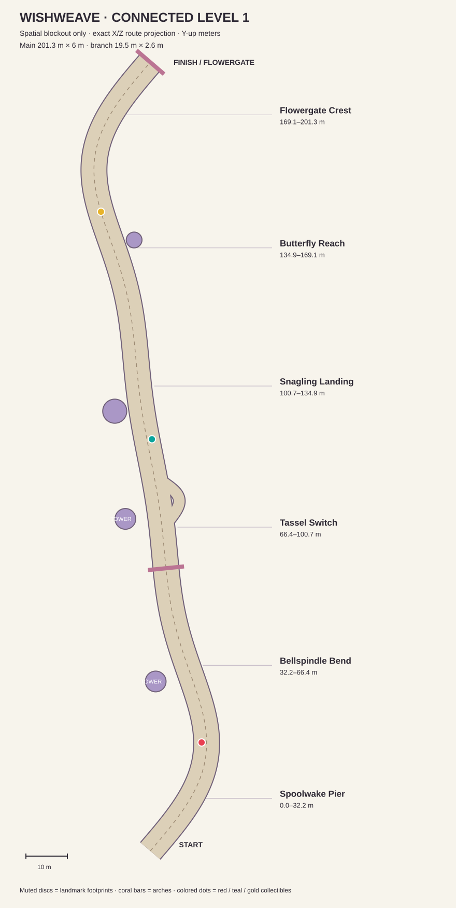
The GLB contains a roughly 201 m main road, one connected side path, six continuous areas and simple named landmarks. The overhead plan is generated from the same route data.
Use this to establish supported surfaces and connections, then dress it in the approved crochet-city art. The simple geometry is not the ornate scenery in the concept images.
Production work still includes materials, decoration, collision setup, character rigs or sufficient directional poses, camera integration and gameplay.
47 character, prop, feature and interface images
Individual art is lossless WebP with the original decoded pixels preserved. These are 2D images, not rigged 3D models. Review alpha edges and foot/hand anchors before production use.
Purl 13 images

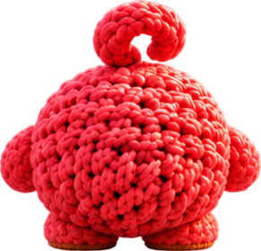

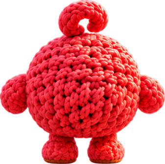

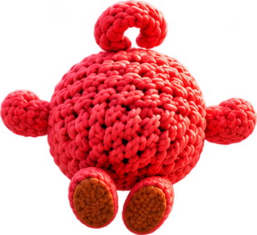

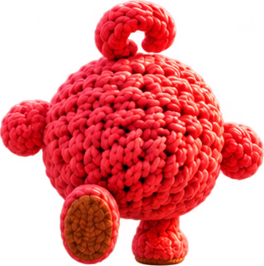

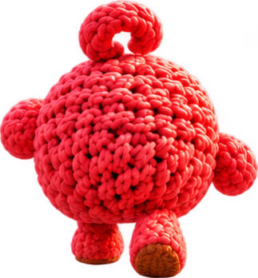

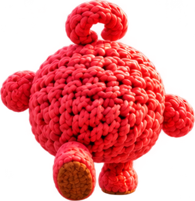

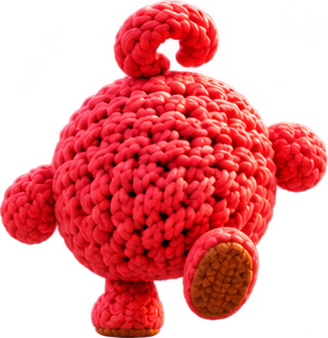

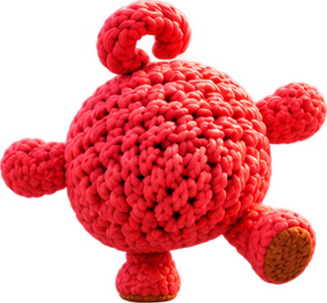

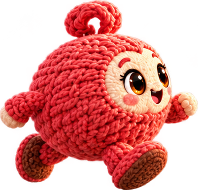

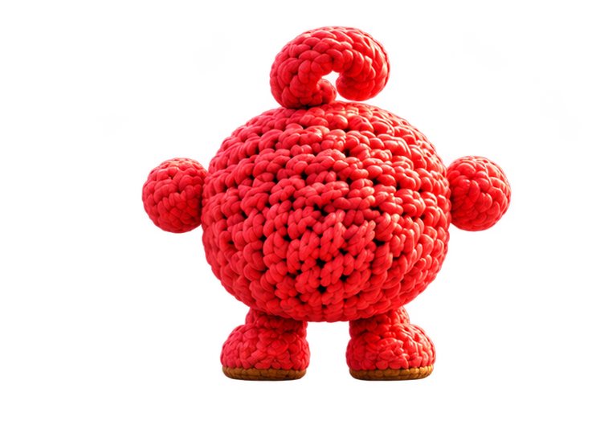

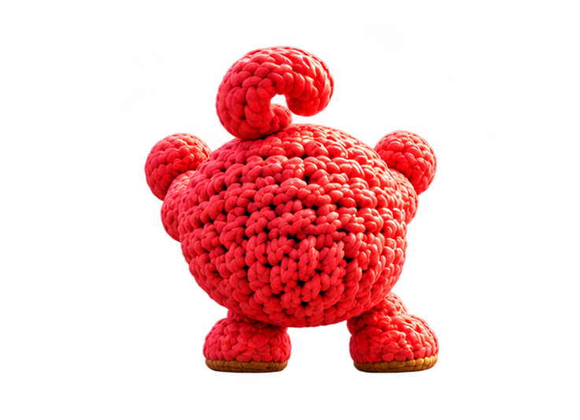

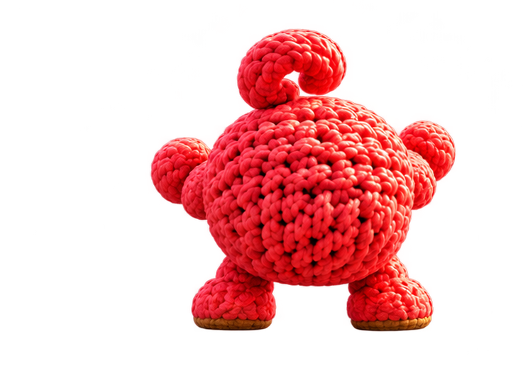

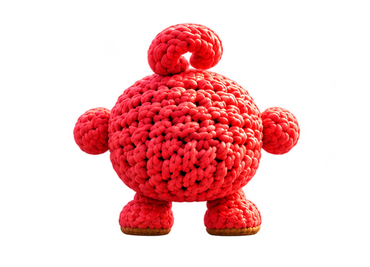
Loop 9 images

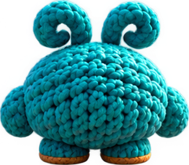

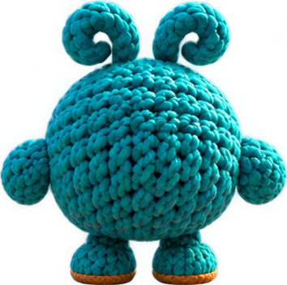

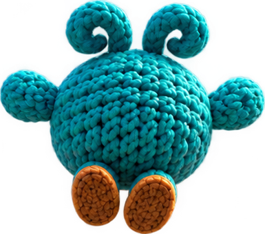

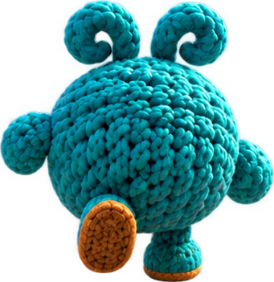

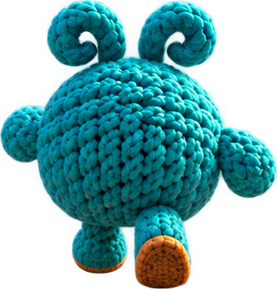

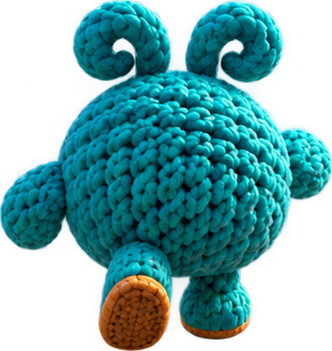

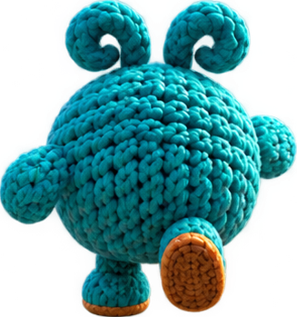

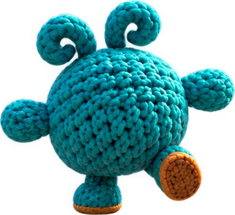

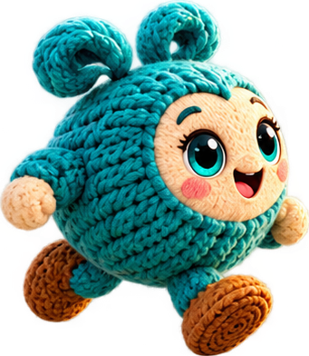
Snagling 8 images


Props 6 images


Features 6 images


Ui 5 images


Art provenance and dimensions · What still needs to be created
Implementation references
Small dependency-free modules emit touch intents, sample the route and advance distance-driven motion. The engine owns physics, animation and race state.
Legacy world references
The seven older paintings preserve materials, embroidery and landmark design. Use them as visual references, not as disconnected gameplay pages.


Check the movement before expanding the whole level
- Import or adapt the route and build the opening rug, tower bend and entry into the next area.
- Demonstrate steering, a grounded jump, stopping while Loop passes, and resuming—all in an uninterrupted run.
- Show the playable build and recording from the same source version. Verify foot contact, camera continuity, depth and Android screen fit.
- After that foundation is accepted, extend through all six connected areas and finish the three pickups, Snagling, butterfly and race results.